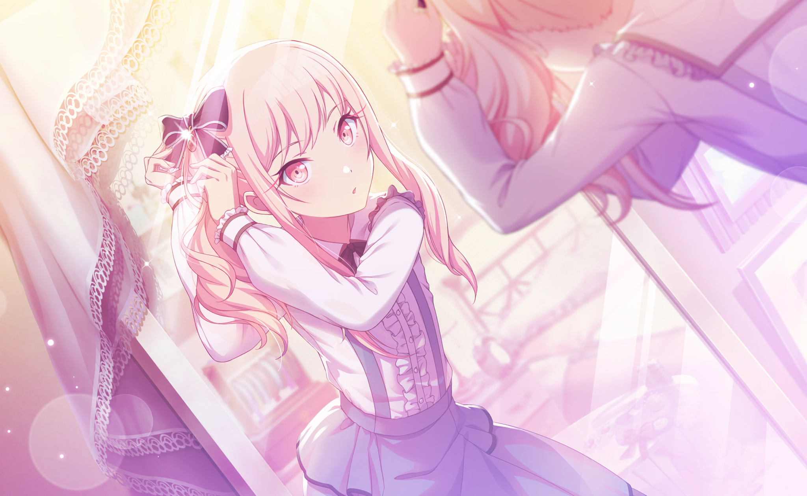
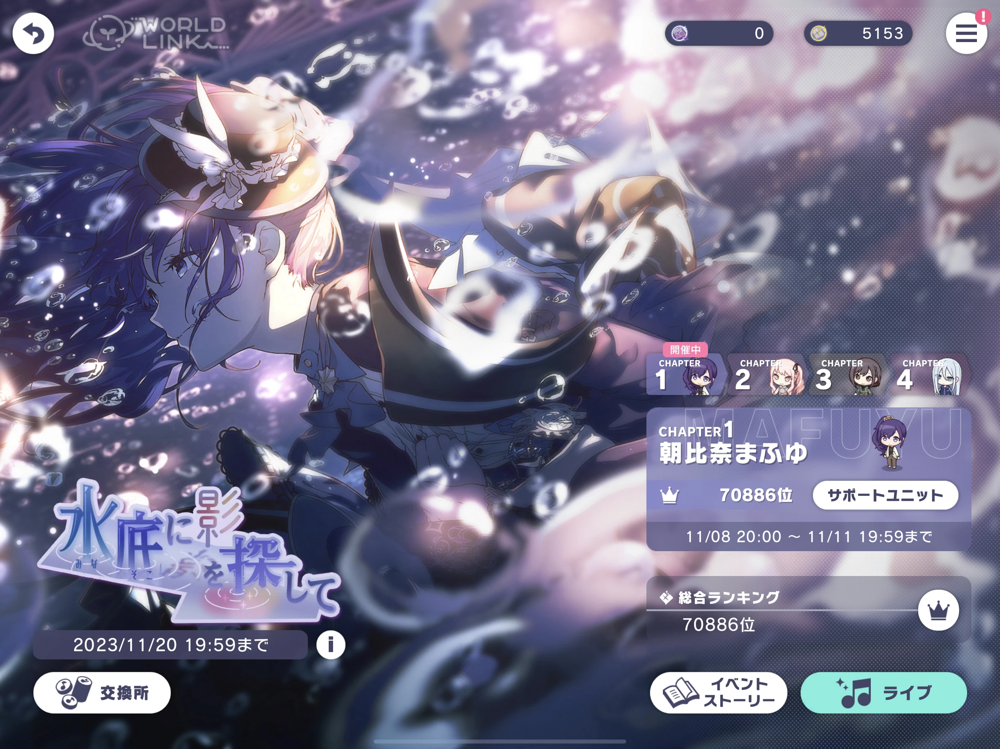
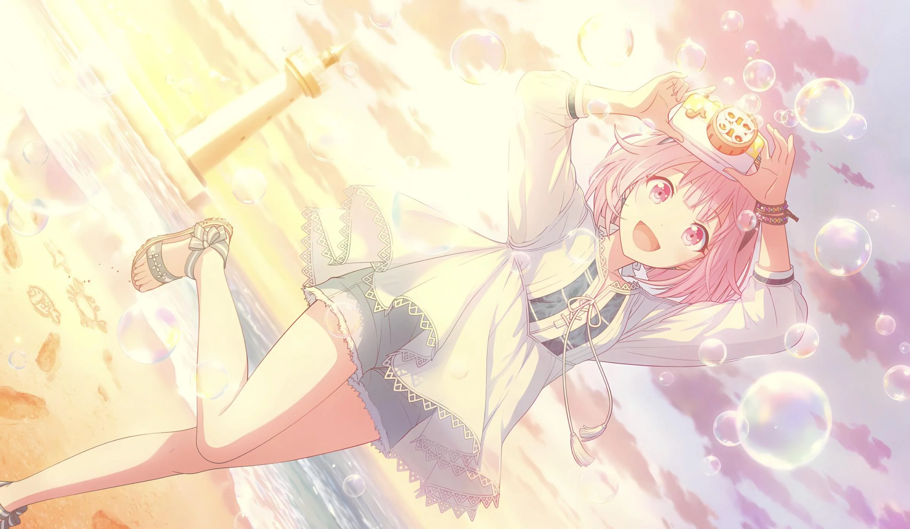
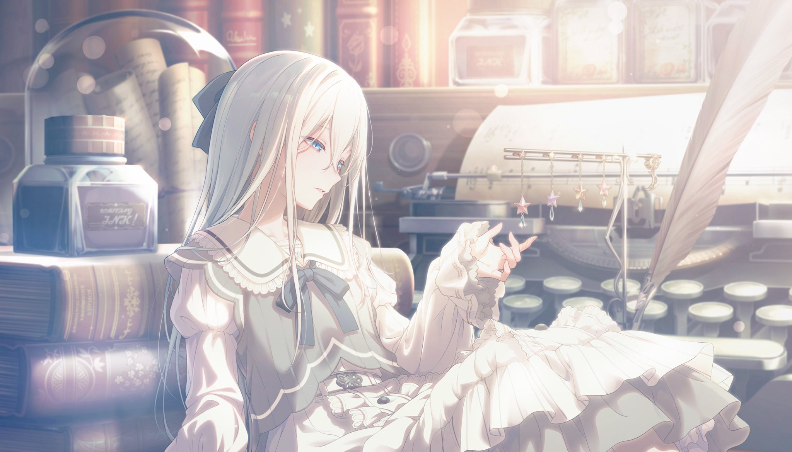
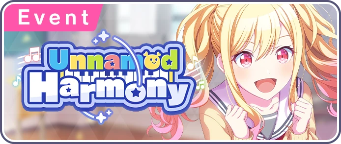
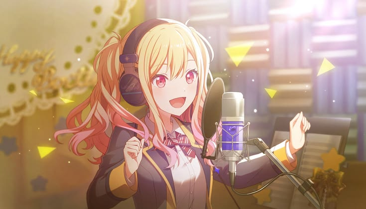
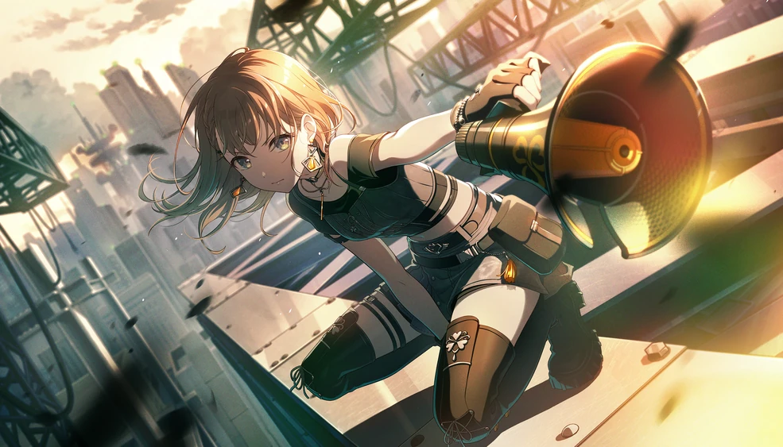
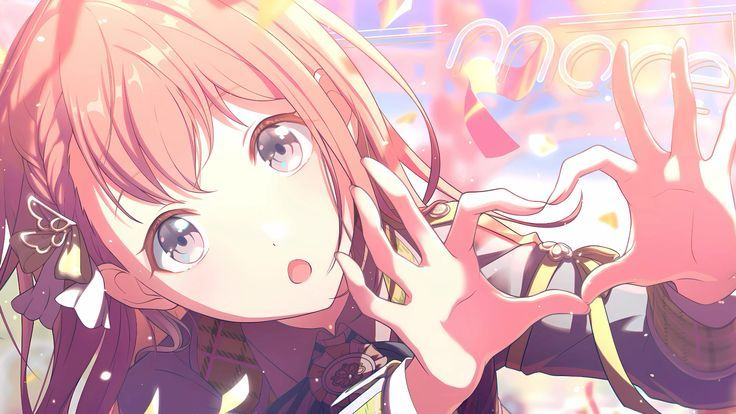
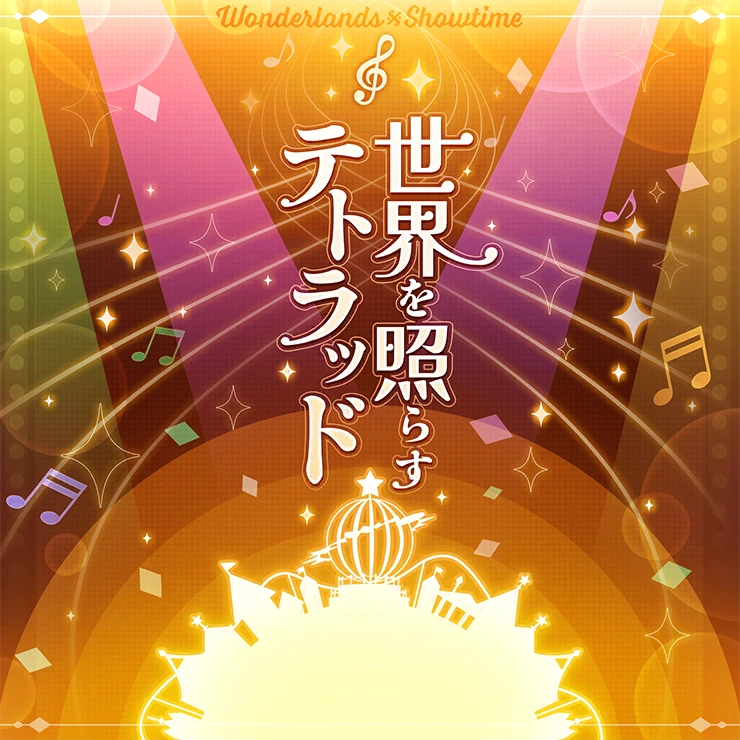

05 / EVENTS & COLLECTION
Stories in
every detail.
Events add new chapters, themed artwork and opportunities to learn more about the characters.

EVENT STORIES
Little moments. Big feelings.
Use this page to introduce the different ways the game expands its characters' stories.

What happens in an event?
Events usually focus on a particular theme or character moment. Players can enjoy a limited-time story, play songs and earn event points or rewards during the event period.
Some events focus on one unit, while others bring characters together in new combinations.
CARD COLLECTION
Character cards.
Cards feature character illustrations and can be used to build your in-game team.



MY PERSONAL FAVOURITES
My favourite parts.
My favourite event

Unnamed Harmony is the 27th event in Project SEKAI and features the group Leo/need. The event happened between the dates July 4th 2022 - July 10th 2022. This is my favourite event because it features the Tenma Saki, which is one of my favourite characters. It shows her stepping up and becoming the band's composer as they start to become famous.

A photo of Saki.
My favourite card

Game Face At The Meeting! is a 4-star card for the character Hanasato Minori from the group MORE MORE JUMP! It can hold a power of up to 37,292 and has the skill What We Each Do, which provides a 120% score boost for 5 seconds. This is my favourite card because it was the first ever 4-star card I recieved which featured one of my favourite characters.

Another image of Minori.
My favourite song

Tonal Twinkle Tetrad is my favourite, most memorable song because it's the first Expert 27 song I first reached a Full Combo on. It was composed by the band OSTER project, and in the game is sung by the band Wonderlands x Showtime. It is 155 BPM, and was released on the date February 9th 2024. When played in the game, the song is 2:01 min in duration, however the full version is 4:23 min.